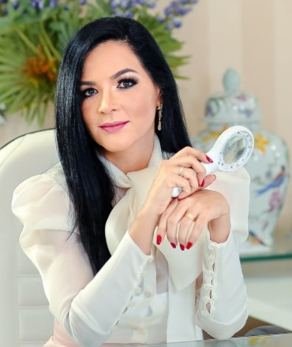

Início · Queda de cabelo e tricologia
Queda de cabelo.
Antes de tratar, entender.
Atuação em tricologia: avaliação dos cabelos e do couro cabeludo, com atenção à história da queda e à indicação individual de cuidado.
Cabelos e couro cabeludo
Queda não é uma explicação única
A Dra. Isnaia declara consulta de tricologia, alopecia e doenças do cabelo em seu perfil profissional. Tricologia é apresentada aqui como atuação, não como especialidade separada.
Queda, redução de volume e alterações do couro cabeludo podem ter diferentes causas. O relato do início e da evolução ajuda a orientar a investigação.
Consulta e áreas declaradas ↗Uma história com contexto
O que contar na avaliação
- Quando começouPerceba se o quadro surgiu de forma recente ou vem mudando ao longo do tempo.
- O que acompanhaConte se há coceira, descamação, falhas ou outras alterações percebidas.
- O que já foi usadoLeve nomes de produtos, suplementos e medicamentos, além de exames anteriores, se houver.

Voz da médica
Suplementar exige indicação
“Mais não significa melhor. Suplementar sem deficiência não é sinônimo de tratar queda — e o excesso de selênio pode, inclusive, causar alopecia. Antes de suplementar, precisamos saber: há indicação?”Dra. Isnaia Almeida · texto de 20/09/2026 sobre selênio e cabeloPublicação do canal da clínica ↗
Não inicie, ajuste ou suspenda suplementos sem orientação. A necessidade de investigar deficiências ou indicar reposição é individual.
Possibilidades e limites
Acompanhamento faz parte da decisão
Depois da avaliação, a conversa pode incluir cuidados, necessidade de investigação e formas de acompanhamento. Um plano não deve ser escolhido apenas porque funcionou para outra pessoa.
Transplante capilar é um serviço declarado pela médica, mas a existência de queda não significa indicação cirúrgica. São decisões diferentes, discutidas em consulta.
Este conteúdo não define a causa da queda nem recomenda um tratamento. A indicação é individual.
Canal autoral
Perguntas também aparecem nos conteúdos
O canal Tricoacademy publica conteúdos com os títulos abaixo. Eles são links de informação, não recomendações para automedicação.
As miniaturas clínicas não são reproduzidas nesta prévia.
Dúvidas frequentes
Perguntas comuns
Preciso tomar suplemento para a queda?
Não se deve presumir essa necessidade. Como a médica destaca em sua publicação, a indicação deve ser avaliada, e o excesso também pode causar problemas.
Queda de cabelo sempre leva a transplante?
Não. A causa da queda, as condições clínicas e as possibilidades de cuidado precisam ser avaliadas antes de discutir cirurgia.
O que levar à consulta?
Leve a história da queda, a lista do que usa, exames anteriores relacionados e suas dúvidas. Não é necessário escolher um tratamento antes da avaliação.
Seu próximo passo
Uma conversa começa com as suas dúvidas.
Entre em contato com a recepção para confirmar a disponibilidade de consulta em Paulo Afonso.